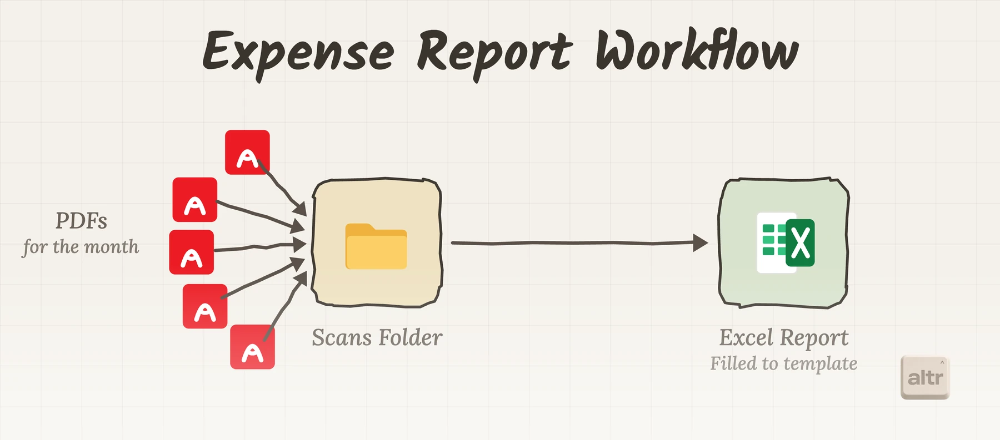
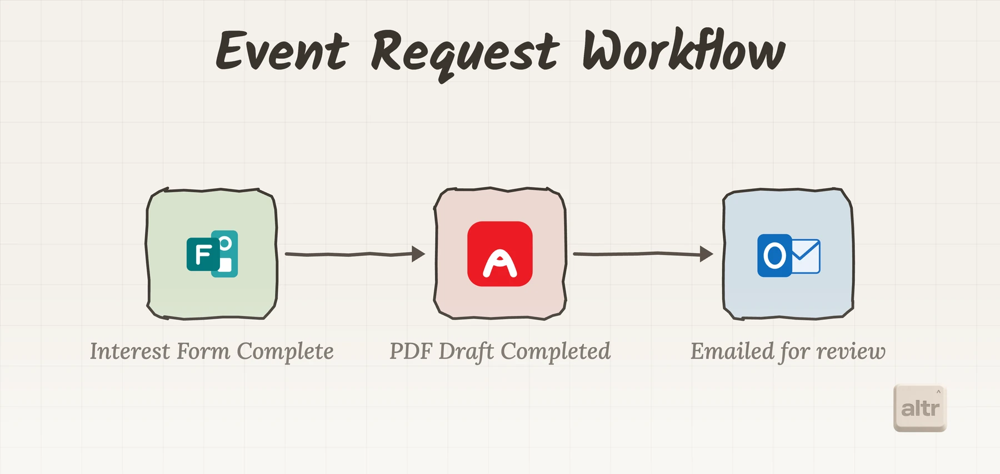

Automating the work behind expenses and events
spARK Labs by ARK Invest gives founders and entrepreneurs the insights, intelligence, and resources to help new ideas take form. This project started with two everyday operations jobs, expense reporting and event requests, and turned their manual submissions, handoffs and follow-up into reusable workflows in Claude Cowork that the team runs and can extend itself.
The existing process relied on manual review, follow-up, and document handling across two common operational workflows: expense reporting and event requests. In partnership with altr, spARK Labs used Claude Cowork to turn those repeatable steps into AI-assisted workflows that could intake information, organize the required details, and help the team move from request to completed output with less manual effort.
To make the workflow repeatable, we packaged the process into Claude Cowork using a combination of MCP connectors and custom skills. The connectors gave Claude access to the tools and files needed to complete the work, while the skill provided the step-by-step instructions, context, and guardrails for each workflow. This allowed members of the spARK Labs team to kick off the process with a slash (/) command inside Claude Cowork and move through expense reports or event requests in a consistent, guided way.
Expense Reports
For the expense reporting workflow, the goal was to take a folder of monthly receipt PDFs and turn them into a completed Excel report using the team's existing template. Instead of manually opening each PDF, copying details, and filling out the report line by line, the workflow gives Claude Cowork the structure it needs to read the scans folder, extract the required information, and organize the output into the correct format.

Event Request
For event requests, the workflow began with a completed interest form and ended with a review-ready PDF routed through email. Claude Cowork helped bridge the steps in between by using the submitted form details to draft the correct document and prepare the request for review. Instead of manually transferring information from the form into a PDF and coordinating the next step by hand, the team could move from intake to review through a repeatable AI-assisted process.

The result was not just a pair of automations, but a repeatable way for the spARK Labs team to launch and operate these workflows inside Claude Cowork. By packaging the process into skills and connecting the right tools through MCP, the team can move from intake to output with a simple command and a clear set of steps. Watch the video below to see how the workflow is triggered in Claude Cowork and how the process moves from request to completed output.